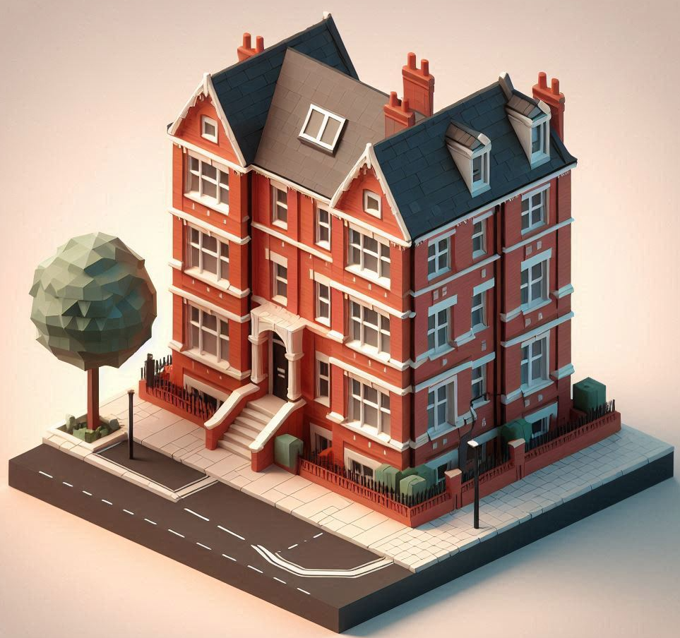
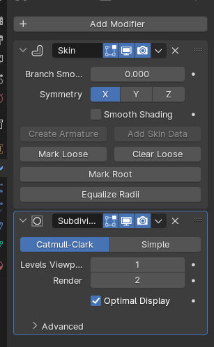
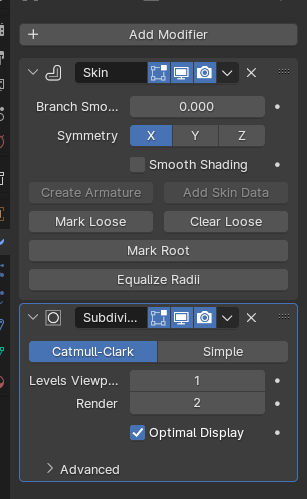
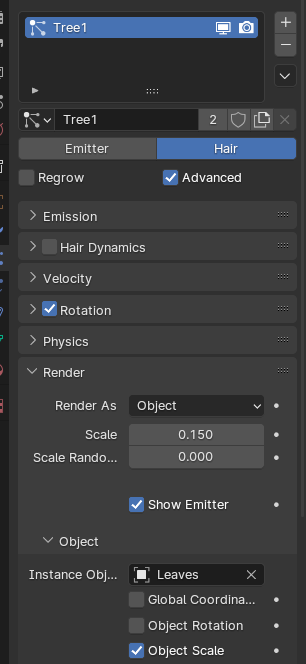
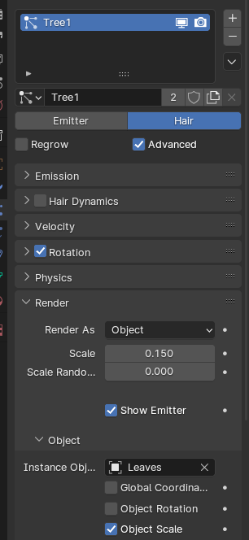
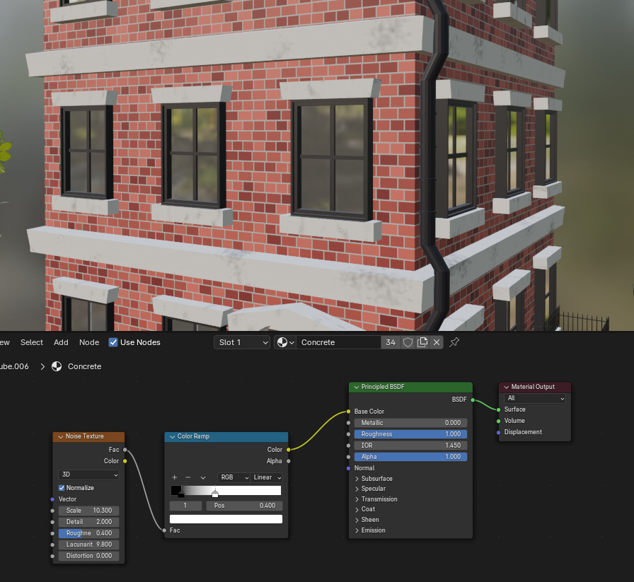
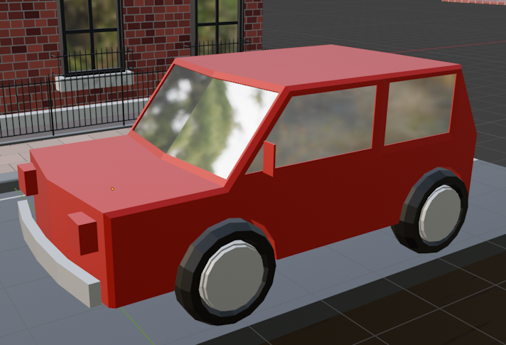
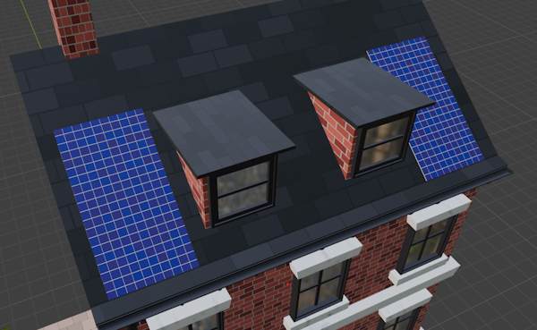
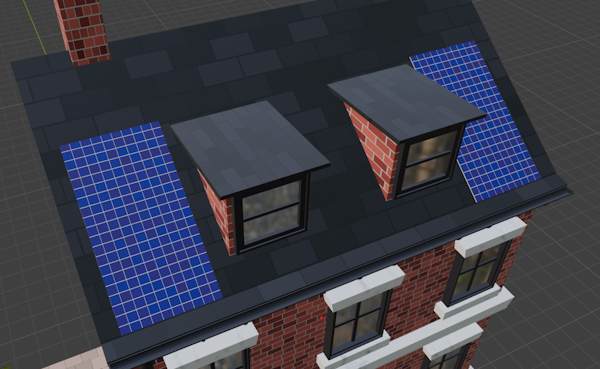
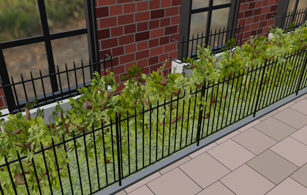

This project focuses on the creation of 3D visualisation of the Urban Cool RSA brief in the form of dioramas for the purposes of spreading awareness of the Urban Heat Island effect and urban cooling solutions that help mitigate this climate change phenomenon. It aims to, if possible, create informational pamphlets to display this information.
This project targets a younger audience who uses social media, as in the ever-increasing presence of social media and the subsequent shortening of attention spans in young people means one of the best ways to catch their attention is through visualisation of information. This also means that the result must be able to balance between information and visualisation, as too much of either defeats the purpose of the project.
This project is done through use of the Blender 3D software for the creation of 3D models and textures, and the use of the Krita art software for the concept drawings.


Initially, the plan was to create three dioramas representing different stages of utilising urban cooling methods. The first diorama would have no urban cooling solutions present upon it, the second diorama exploring the challenge of utilising urban cooling solutions in an area with little space, and the third diorama exploring the ideal conditions to apply urban cooling solutions. I concluded that making three was too ambitious and would be difficult to accomplish in a limited timeframe, so it was cut down to just a diorama with and a diorama without urban cooling solutions, and what that may look like.

Among the first challenges was figuring out how I wanted the final product to look like in the first place. The average height of city blocks and flats in the UK is three stories, and these buildings usually have red brick facades. Inspiration was taken from the local city of Winchester, which provided an idea of what the building should include in its details. To visualise this, I used Microsoft Designer to create an AI generated diorama of what the final product could look like.
The use of AI generation for inspiration provides a good foundation for the final piece, helping visualise what a potential final piece could look like. This begs the question; why not use AI for the overall task? Even a year after the boom in AI art generation, people are apprehensive about the medium. People appreciate when there is effort put into a piece of work and are more inclined to give it a look rather than pass it on. Furthermore, despite rapid advancements in AI generation, you can easily spot and point out the imperfections in an AI generated piece. It would feel insincere to the target audience, and not be a good hook.
Using the AI generated results as inspiration, concept art for the final piece was made using the free online art software Krita. The first house does not contain any of the urban cooling solutions, has a car representing the mass use of personal transport, and therefore the tree is depicted as dying/barren, and there is very little greenery in the scene. Whereas for the second house, there are two trees and bushes all around it, as well as a bus in the place of the car to represent use of public transport in its stead.

The first iteration of the house model. Without any prior experience making houses in Blender, there was a short period of trial-and-error with a practice model. The first idea to building the house was through use of Booleans to create spaces for the windows, however the idea was quickly scrapped as it would have been a hassle when working with the textures.
Instead, the windows would be a separate model that, using the array modifier which creates clones of the model, would be placed on the building. This also conveniently meant that only one window needed to be edited to affect all the windows of the array.
The second major hurdle to get past was the creation of a tree and the bushes. For this, I had to learn how to use vertex groups, the skin and subdivision modifiers. I started by extruding vertices until they resulted in a tree-like shape, with branches pointing in each direction. Then, applying the skin modifier, which creates a solid shape around the vertice, and adding the subdivision modifer to turn that shape into a cylindrical/rounded shape.

The vertices of the tree.
 

The tree and skin and subdivision modifers.
The leaves are then placed on using a particle emitter and the hair option, then replacing the hairs with a plane with a PNG of branching leaves. Then, the leaves are randomly rotated to give an illusion of different branches and leaves. This method was used for both the trees and the bushes.
 


The branch image I found did not have a transparent background. This resulted in a black border surrounding the actual image, meaning that the trees that the leaves were attatched to saw the same issue. Using the knife tool, I meticulously cut the border of the leaves in a process that took around 10 monutes until all that remained was a clear image. For future works, I will either make my own images, or find one with a transparent background.


One of the most important components in the making of the dioramas was the brick texturing node. Bricks for the building, roof and pavement were made utilising Blender’s brick texture node found in its shading options. The texture is adjustable allowing for different arrangement and sizes of the individual bricks. The building was also given a chimney and some windows on the roof, as these are very commonly seen on UK houses.


In order to create a marble-like texture for the white-greyish concrete present on the windows and around the building, a noise texture node was utilised, creating randomly placed patterns around the marble. Then, using the color ramp node, I am able to change the colour, or in this case, the intensity of the black and white to give an illusion of depth and detail. This method was applied to the dirt underneath the pavement and road aswell.

Some more detailing was added to the road like a small drain and road markings as I felt the environment seemed a little barren without the added detail. I then moved on to adding a fence for the right side facade of the house, which makes room for the bushes later in the second diorama.

The last thing to do was to make a car. Originally, I had thought about making a sleek, modern vehicle, but I found it to be out-of-place around the other assets.

I decided to create a boxier car instead, as it better fit the aesthetic of the rest of the diorama. Although, as it was made nearer to the end of production, the car ended up being not as detailed as it otherwise could have been. Despite this, it blends in perfectly with the rest of the diorama, and its imperfections are less immediately noticable.

At this point, I was unsure of how I wanted to make the vertical greenery systems (VGS) for the rooftops. I considered covering the entire roof in grass as it was in the concept piece but decided to implement solar panels to diversify it and make it more visually interesting. However, it initially seemed complicated to make as I considered whether to make it a 3D model or a 2D image. Solar panels have complex mounts that they are placed over, but I decided against making them. Instead of making the panels 3D, it was tackled through clever use of the brick texturing, making the bricks two similar shades of dark blue and reducing their size drastically to give the solar panel look. Furthermore, I decided to keep the model as a simple plane, as the viewer would not be able to see a full model anyway from the angle it is shown. This all drastically reduced the amount of time that would have been spent on meticulously modelling it otherwise.
 

The bushes were made in the same manner as the trees, although as bushes are denser with foliage the branches were more packed in to give that dense appearance. To further add to the greenery, a grass texture was applied to the ground beneath the tree and bushes, which from a distance blend together with splotches of brown in-between to showcase depth of detail.

Because they are not visible from the angle of the picture, the VGS on the rooftop are a series of flat planes with a grass texture, covered loosely by leaves using the same particle system method as the trees are. From a birds-eye perspective directly overhead, the imperfections are easy to see, with large gaps in-between them. The opposite, unseen side of the roof only has a singular, large flat plane which has few leaves. However, the angle allows the leaves hide the lack of detail, and as the diorama does not require to be moved, less effort was needed to create a similar effect.


The colour is meant to convey to the reader the idea of a hot, dry and polluted environment, a method to convince them of the unsustainability of an urban environment with little green infrastructure, whereas for the green diorama, the blue conveys coolness and is a more welcoming colour to inform the opposite. In addition, the relative emptiness of the first diorama gives a sense of a barren environment caused by climate change, which is contrasted by the more cluttered second diorama.
At this point I considered making the pamphlets put the dioramas in, and the information around them. However, due to the little amount of time remaining for the assignment, I decided against doing so and focused on finishing what I had already done.
The biggest hurdle of this project was time management and procrastination. Although I worked tirelessly every day on trying to finish the models within a reasonable timeframe, progress was slow, which resulted in the rushing near the of the project and is why, for example, the vehicles are so lacklustre. However, it has been vital to learning new techniques and methods of modelling as well as building on existing skills.